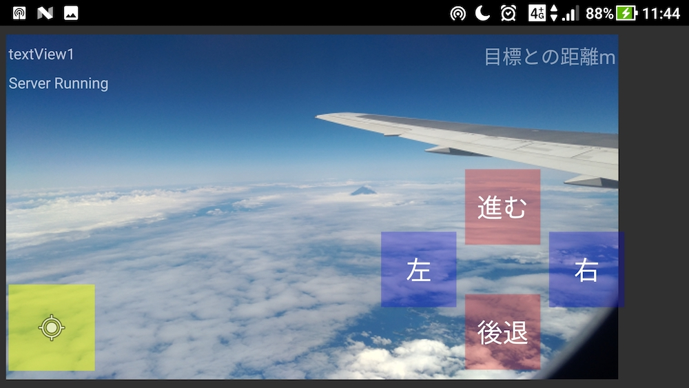
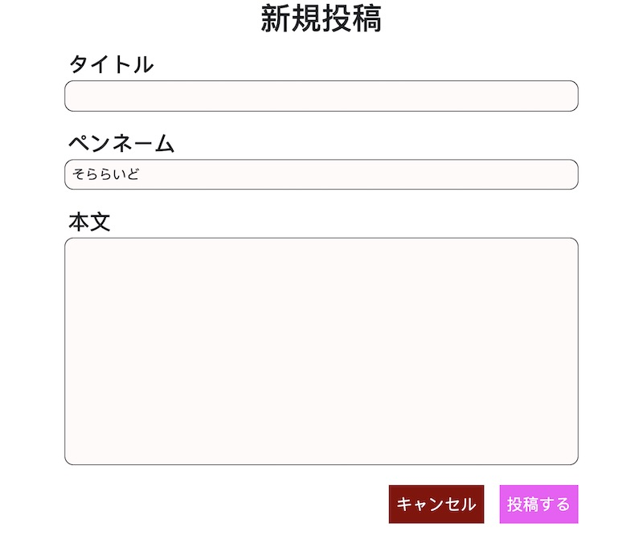

- 名前：そららいど
- 所属：大学工学部 電子情報工学科 4年
- 趣味：散歩
- 好きな食べ物：蒙古タンメン
- 老後に嗜みたい趣味：ピアノ
プロフィール
制作実績
オンライン作業部屋
- オンライン上の仮想のルームで席を選んで作業。
- YouTubeで各ルームをライブ配信。
- ライブチャットでユーザーの入退室ログを記録。
- フロントエンドはNuxt.js、Firebase Authenticationを使用。
- バックエンドはAWS Lambda（Go言語）、Cloud Functions、Cloud Firestoreを使用。
[新機能！] ルームで座席を選べるようになりました
— オンライン作業部屋 (@osr_soraride) December 13, 2020
！！
Googleアカウントがあればすぐに利用できますhttps://t.co/hHrjGEAVCu pic.twitter.com/yoYOoERYNe
Androidアプリ ＋ Raspberry Pi（マイコン）
- Andoroidアプリから映像付きでラジコンカーを遠隔操作。
- マイコンはRaspberry Pi を使用。

簡易掲示板サイト
- PHP + MySQL + Googleアカウント認証 を使用。

経験スキル
- Nuxt.js
- Git、GitHub
- Google Cloud Functions、Firestore
- AWS Lambda、API Gateway、S3、Secret Manager
- Flutterによるモバイルアプリ開発
- PHP・MySQLを用いた簡易掲示板サイト
- C言語によるマイコン操作、画像処理、音源操作
- Java・ソケット通信(TCP, UDP)によるAndroidアプリ開発
- Twitterスクレイピング
- Pythonによるニューラルネットワーク構築・学習
- Twitter Bot・LINE Bot開発
- Heroku環境へデプロイ
- HTML・CSS・JavaScript
連絡先
- E-mail：sorarideblog@gmail.com
- Twitter：@sorarideblog
情報発信
Twitter
Qiita
マイページGitHub
GitHubプロフィール